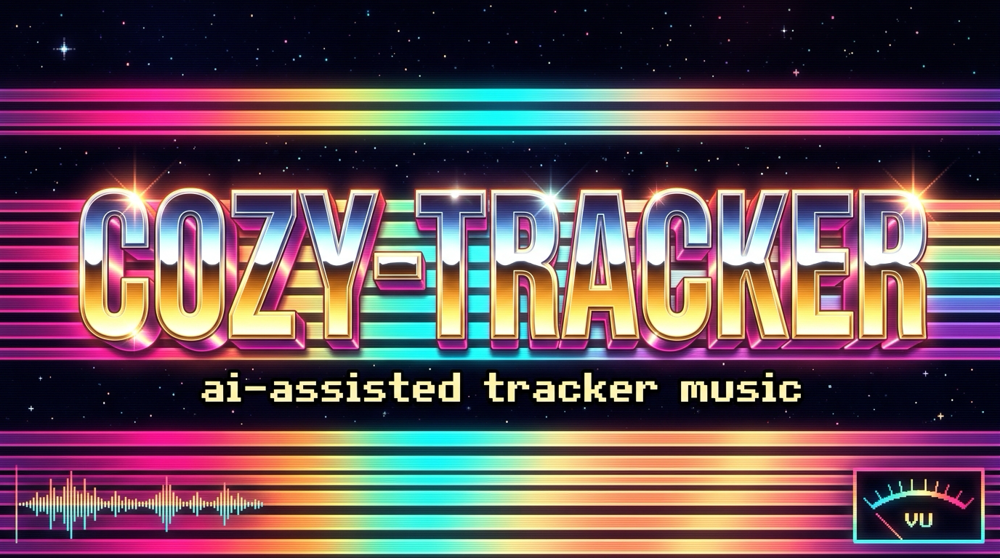

Describe the mood — get a score that reacts to your game.
One tiny module that layers, transitions, and re-scores itself in real time. No stem stacks. No crossfade rigs. Kilobytes, not megabytes, cleared to ship.
You get two bad options: license an eight-bar loop that plays the same whether the player is picking flowers or fighting for their life — or hand-build a multi-stem crossfade rig that bloats your download and still only fades between fixed mixes. Interactive worlds deserve music that reacts like the rest of the game does. cozy-tracker generates music that is the adaptive system: described in plain language, rendered from a clean-to-ship sample library, dropped into your engine with two lines of code.
Each instrument is its own channel. Intensity is just muting layers; transitions are jumps between named sections — one file, with transitions scheduled at pattern boundaries.
Describe it, get it. Batch a whole soundtrack in CI. Spin twelve variations for procedural levels from a seed.
Ask for a bridge that walks your combat theme into exploration — matched in key and tempo — and get a module that connects them.
Every sound traces to a public-domain or CC0 source in a provenance ledger. No sample-license landmines in your release.
An adaptive score here is 15–290 KB. A five-stem rig is tens of MB. That gap decides whether your web or mobile game ships with music.
A linter catches dissonance and register clashes before you hear them. Offline rendering + metering make a soundtrack you can regression-test.
Songs are JSON — diffable, versioned, seedable, parameterizable by the game itself. Your soundtrack is source code.
Small runtime bundles for web, Godot, Unity and more expose the same two calls. The hard part — reaching in to mute layers — is done for you.
Alongside every module, cozy emits a manifest describing its layers and sections. Your game reads the module + manifest and gets setIntensity() and transitionTo().
// siege_engine.cozy.json — emitted next to siege_engine.it (real output) { "layers": [ { "name":"core", "channels":[3,4], "above":0 }, { "name":"riff", "channels":[5], "above":0.25 }, { "name":"drums", "channels":[0,1,2], "above":0.45 }, { "name":"stabs", "channels":[7], "above":0.65 }, { "name":"lead", "channels":[6,8], "above":0.8 } ], "sections": { "explore":[7,8], "bridge":[9,9], "combat":[11,14], "boss":[16,17] }, "loop": "explore" }
This is Siege Engine — one generated 190 KB module + its manifest, driven by the same two calls your game would make. Change the game state; the music transitions at the next musical boundary. Drag intensity; layers drop in and out live.
const music = await CozyAdaptive.create('siege_engine.it', 'siege_engine.cozy.json');
Combat music and exploration music are different songs — different key, tempo, and feel. cozy composed a bridge that walks one into the other (an E pedal resolving into A minor while the clock ramps 150 → 112 BPM) and merged all three into a single 280 KB module. One call crosses between songs, musically.
const music = await CozyAdaptive.create('siege_to_night.it', 'siege_to_night.cozy.json');
Every track was composed by the pipeline from public-domain or synthesized samples, then rendered to a self-contained module. Open one in the browser player — pattern view, per-channel solo/mute, oscilloscope. Each is credited with the model that composed it and the date, so the list tracks progress.